Este año, el equipo de G2 ha tenido varios cambios en su Roster para 2021.
Con la salida de Perkz hacia el equipo norteamericano de Cloud9 el club encontro la oportunidad de realiza el fichaje del exjugador de Fnatic "Rekkles" siendo este el unico cambio en el equipo.
El equipo de Fnatic cambia dos integrantes de su equipo como son el medio y el adcarry,
siendo estos sustituidos por Nisqy (Ex-midlaner de Cloud9) y por Upset (Ex-Adcarry de Schalke 04).
Promisq, support de G2 en 2019, entra como soporte para el equipo de Astralis
Nuevo fichaje en la jungla de Mad Lions, Elyoya, jugador de origen español entra para el roster de 2021.
Vetheo, el nuevo midlaner de tan solo 18 años que participara en el equipo de Misfits Gaming para esta temporada.
 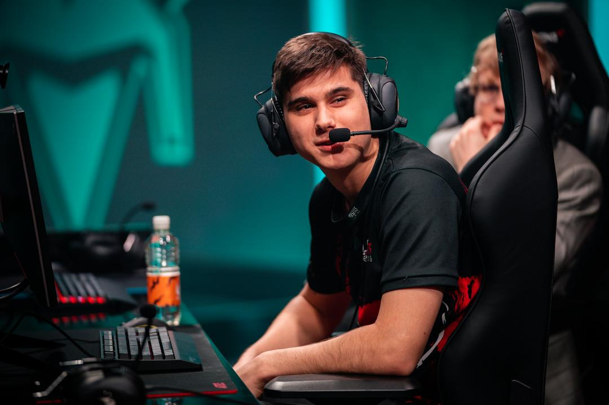
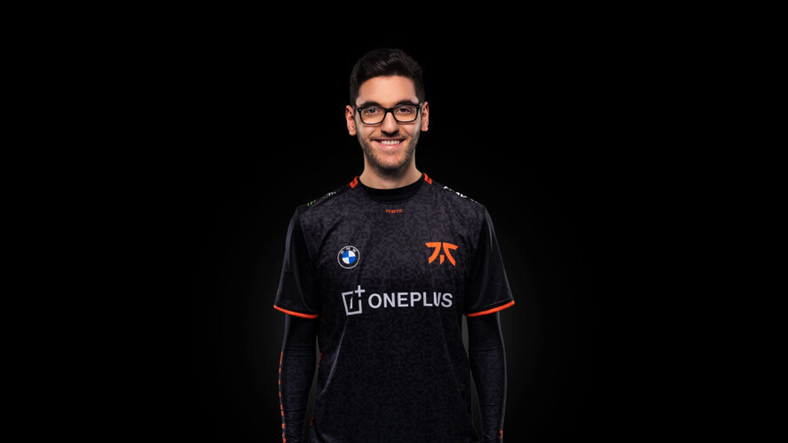 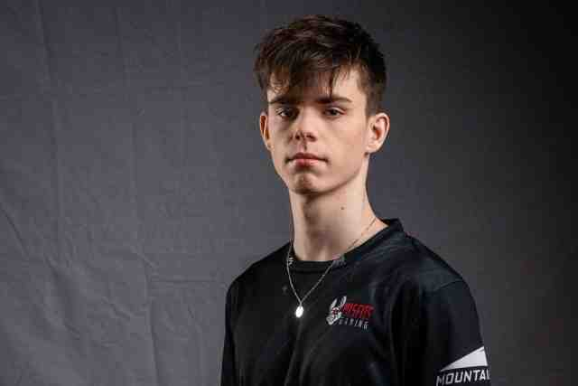
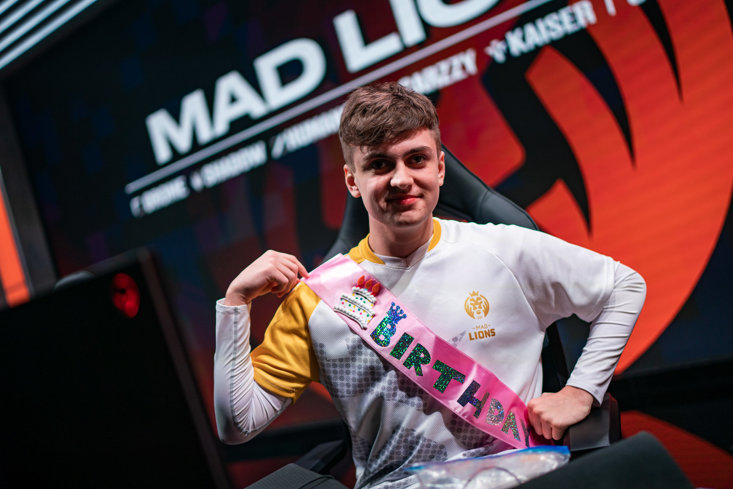 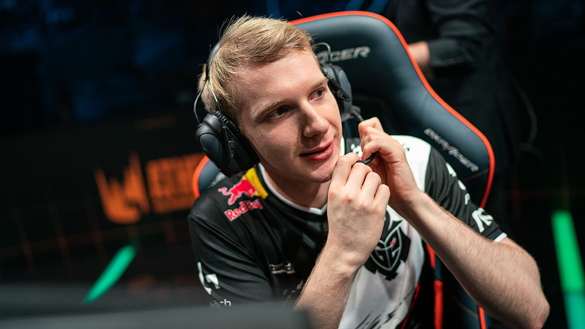
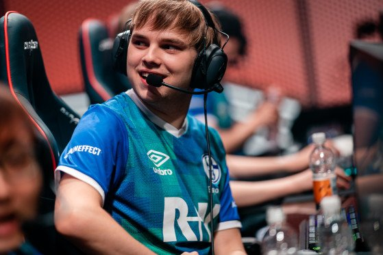
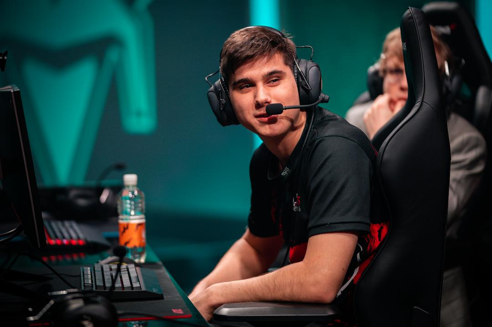
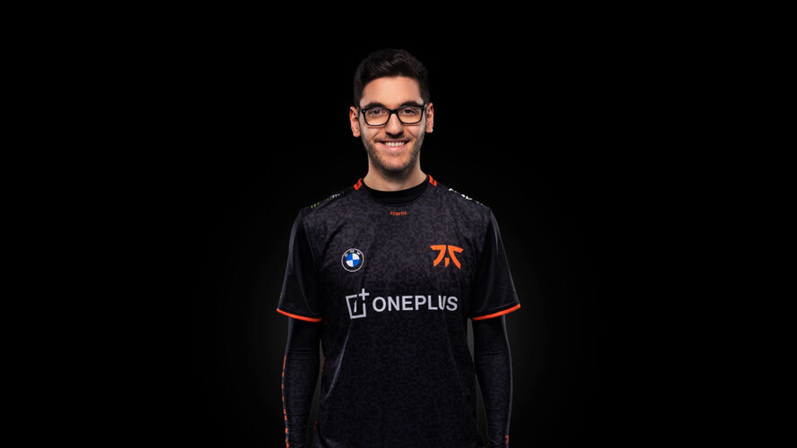 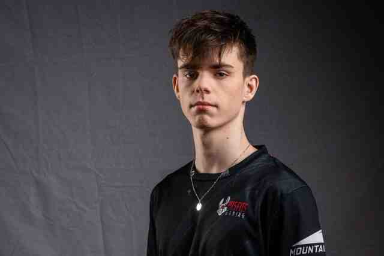
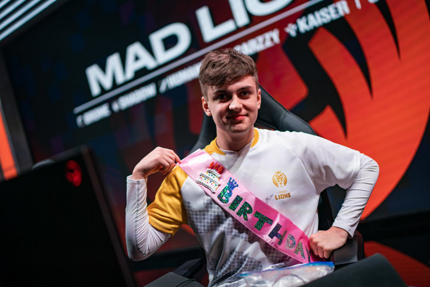 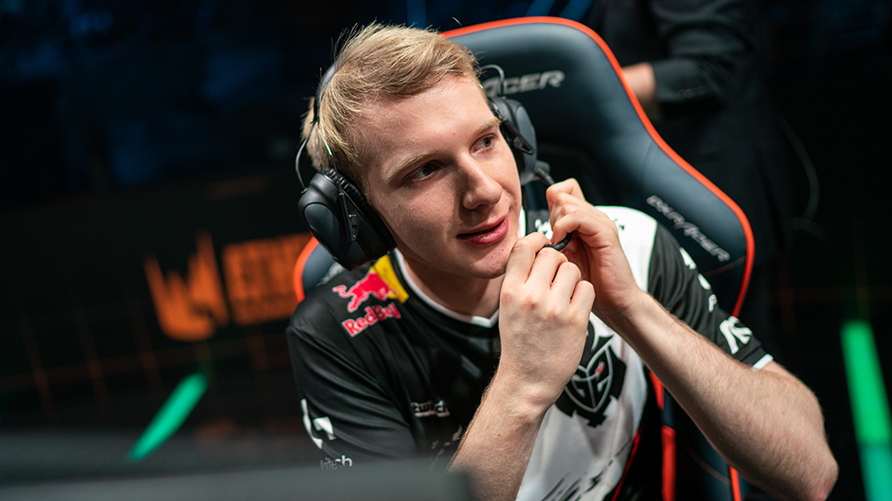
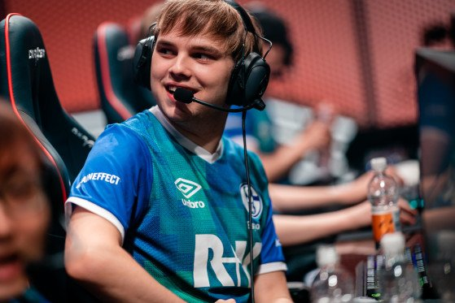